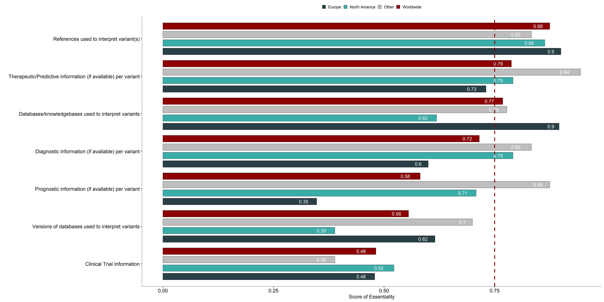

data |>
select(continent, ID) |>
distinct() |>
count(continent) |>
pivot_wider(names_from = "continent", values_from = "n") -> nrRespAn International Landscape of Cancer NGS Reporting Practices
palContinents <- c(Europe = "#283F46", `North America` = "#3aada8", Other = "gray", Worldwide = "#8B0000")
textSize <- 24
cutoff <- 0.75Introduction
Next Generation Sequencing (NGS) is increasingly used in routine clinical oncology. To guide the interpretation of NGS variants, multiple international guidelines and standards have been published, and these are integrated into cancer NGS reports in varying ways worldwide. However, little is known about how these guidelines are applied in real-world laboratory reporting. To address this, the Variant Interpretation for Cancer Consortium Virtual Molecular Tumor Board (VICC-VMTB), in collaboration with the Cancer Genomics Consortium (CGC) and the ClinGen Somatic Clinical Domain Working Group (CDWG), conducted a global survey of cancer NGS reporting practices. The survey aimed to identify which reporting elements are considered essential and how often they actually appear in NGS reports.
Row
Global representation of survey responses
data |>
select(region, ID, continent) |>
distinct() |>
mutate(region = ifelse(region == "UK", "United Kingdom", region)) |>
mutate(region = ifelse(region == "USA", "United States of America", region)) |>
group_by(region) |>
count() -> sum.country
sf::sf_use_s2(FALSE)Spherical geometry (s2) switched offworld <- rnaturalearth::ne_countries(scale = "small", returnclass = "sf")
world |>
cbind(st_coordinates(st_centroid(world$geometry))) |>
mutate(region = name) |>
left_join(sum.country) |>
# leaflet::leaflet() |>
# addTiles() |>
# setView(lat = 10, lng = 0, zoom = 2) %>%
# addPolygons(fillColor = ~ n, stroke = FALSE)
#
ggplot() + geom_sf(aes(fill = n)) +
scale_fill_continuous(low="thistle2", high="darkred",
guide="colorbar",na.value="lightgray",
name="# Responses",
breaks=seq(0, 20, by = 5)) +
geom_label_repel(data = world |>
cbind(st_coordinates(st_centroid(world$geometry))) |>
mutate(region = name) |>
left_join(sum.country) |> filter(n > 1) ,aes(X, Y, label = n),
size = textSize/2, nudge_x = -5, nudge_y = -1) +
labs(x="", y="") +
theme_pubr(base_size = textSize, legend = "bottom") -> plot.countriesWarning in st_centroid.sfc(world$geometry): st_centroid does not give correct
centroids for longitude/latitude dataJoining with `by = join_by(region)`Warning in st_centroid.sfc(world$geometry): st_centroid does not give correct
centroids for longitude/latitude dataJoining with `by = join_by(region)`# add bar-plot with country not given
sum.country |>
filter(is.na(region)) |>
mutate(region = str_replace_na("Country not specified")) |>
pivot_wider(names_from = "region", values_from = "n")-> na.region
plot.countries +
annotate("table", x = -180, y = -70, label = list(cbind(na.region))) +
ggpubr::theme_transparent() +
theme(base_size = textSize, legend.position = "bottom") -> plot.countries
plot.countriesWarning in plot_theme(plot): The `base_size` theme element is not defined in
the element hierarchy.
#plotly::ggplotly(plot.countries)
#ggsave("figures/overviewParticipants.png", width = 14, height = 10.5, dpi = 600)Row
Types of tumors analysed
cancer.factor <- rev(c("Solid Tumor", "Hematologic Malignancies",
"Both", "Both (only pediatric cancer)", "Other", "Not specified"))
data |>
filter(name == "cancer_type") |>
select(ID, value) |>
distinct() |>
group_by(value) |>
replace_na(list(value = "Not specified")) |>
mutate(value = ifelse(value %in% cancer.factor, value, "Other")) |>
count() |>
mutate(cancer_type = factor(value, levels = cancer.factor)) |>
filter(cancer_type != "Not specified") |>
ggbarplot(x = "cancer_type", y = "n", fill = "grey23",
ylab = "# Responses", xlab = "", rotate = T) +
#scale_fill_continuous(low="thistle2", high="darkred") +
theme_pubr(base_size = textSize/2) +
theme(legend.position = "none") -> plot.cancer
plotly::ggplotly(plot.cancer)Background of participants
Histogram of participant work settings at a clinical, commercial, and/or academic setting.
org.factor <- c("Clinical/Hospital Laboratory", "Commercial Laboratory", "Academic/Research Laboratory", "Other")
data |>
filter(name == "organization") |>
select(ID, name, value) |>
distinct() |>
group_by(ID) |>
mutate(org = 1:n()) |>
mutate(org = paste0("org", org, sep="")) |>
pivot_wider(names_from = org, values_from = value) |>
select(-name) |>
mutate(org1 = ifelse(org1 %in% org.factor, org1, "Other")) |>
group_by(org1, org2) |>
count() |>
mutate(org2 = ifelse(is.na(org2), org1, org2)) |>
mutate(org1 = factor(org1, levels = org.factor),
org2 = factor(org2, levels = org.factor)) -> sum.organization
data |>
filter(name == "organization") |>
select(ID, name, value) |>
distinct() |>
pivot_wider(names_from = name, values_from = value) |>
unnest(organization) |>
mutate(organization = ifelse(organization %in% org.factor, organization, "Other")) |>
mutate(count = 1) |>
pivot_wider(names_from = organization, values_from = count, values_fill = 0) -> data.upsetWarning: Values from `value` are not uniquely identified; output will contain list-cols.
• Use `values_fn = list` to suppress this warning.
• Use `values_fn = {summary_fun}` to summarise duplicates.
• Use the following dplyr code to identify duplicates.
{data} |>
dplyr::summarise(n = dplyr::n(), .by = c(ID, name)) |>
dplyr::filter(n > 1L)data.upset[org.factor] <- data.upset[org.factor] == 1
upsetjs(sizingPolicy = upsetjsSizingPolicy()) |>
fromDataFrame(data.upset |> select(-ID)) |>
generateDistinctIntersections() |>
chartFontSizes(bar.label = paste0(as.character(textSize/2), "px"), set.label = paste0(as.character(textSize/2), "px"), axis.tick = paste0(as.character(textSize/2), "px"))Results on essentiality
Column
General Information on NGS analysis
data.essentiality |>
filter(section == "Overview", continent == "Worldwide") |>
arrange(normEssent) |>
mutate(label = paste0(name, ", SE = ", round(normEssent, 2))) -> orderOverview
data.essentiality |>
filter(section == "Overview") |>
mutate(name = factor(name, levels = orderOverview$name)) |>
ggbarplot(x = "name", y = "normEssent", palette = palContinents,
fill = "continent",
rotate = T,
label = TRUE, lab.size = textSize/3, lab.nb.digits = 2, lab.pos = "in", lab.col = "white",
lab.vjust = 0.5, lab.hjust = 2,
xlab = "", ylab = "Score of Essentiality", position = position_dodge(0.9)) +
# ylim(-0.16, 1)+
geom_hline(yintercept = cutoff, color = "#8B0000", lty = "dashed", size = 2) +
theme_pubr(base_size = textSize*2) +
theme(legend.position = "top", legend.title=element_blank()) Warning: Using `size` aesthetic for lines was deprecated in ggplot2 3.4.0.
ℹ Please use `linewidth` instead.Warning: No shared levels found between `names(values)` of the manual scale and the
data's colour values.
Overview of variant reporting
data.essentiality |>
filter(section == "Variants") |>
filter(continent == "Worldwide") |>
arrange(normEssent) |>
mutate(label = paste0(name, ", SE = ", round(normEssent, 2))) -> orderVariants
data.essentiality |>
filter(section == "Variants") |>
mutate(name = factor(name, levels = orderVariants$name)) |>
ggbarplot(x = "name", y = "normEssent", palette = palContinents,
fill = "continent",
rotate = T,
label = TRUE, lab.size = textSize/3, lab.nb.digits = 2, lab.pos = "in", lab.col = "white",
lab.vjust = 0.5, lab.hjust = 2,
xlab = "", ylab = "Score of Essentiality", position = position_dodge(0.9)) +
# ylim(-0.16, 1)+
geom_hline(yintercept = cutoff, color = "#8B0000", lty = "dashed", size = 2) +
theme_pubr(base_size = textSize*2) +
theme(legend.position = "top", legend.title=element_blank()) Warning: No shared levels found between `names(values)` of the manual scale and the
data's colour values.Overview of functional assessment
data.essentiality |>
filter(section == "Functional") |>
filter(continent == "Worldwide") |>
arrange(normEssent) |>
mutate(label = paste0(name, ", SE = ", round(normEssent, 2))) -> orderFunctional
data.essentiality |>
filter(section == "Functional") |>
mutate(name = factor(name, levels = orderFunctional$name)) |>
ggbarplot(x = "name", y = "normEssent", palette = palContinents,
fill = "continent",
rotate = T,
label = TRUE, lab.size = textSize/3, lab.nb.digits = 2, lab.pos = "in", lab.col = "white",
lab.vjust = 0.5, lab.hjust = 2,
xlab = "", ylab = "Score of Essentiality", position = position_dodge(0.9)) +
ylim(-0.16, 1)+
geom_hline(yintercept = cutoff, color = "#8B0000", lty = "dashed", size = 2) +
theme_pubr(base_size = textSize*2) +
theme(legend.position = "top", legend.title=element_blank()) Warning: No shared levels found between `names(values)` of the manual scale and the
data's colour values.
Treatment recommendations
data.essentiality |>
filter(section == "Treatment") |>
filter(continent == "Worldwide") |>
arrange(normEssent) |>
mutate(label = paste0(name, ", SE = ", round(normEssent, 2))) -> orderTreatment
data.essentiality |>
filter(section == "Treatment") |>
mutate(name = factor(name, levels = orderTreatment$name)) |>
ggbarplot(x = "name", y = "normEssent", palette = palContinents,
fill = "continent",
rotate = T,
label = TRUE, lab.size = textSize/3, lab.nb.digits = 2, lab.pos = "in", lab.col = "white",
lab.vjust = 0.5, lab.hjust = 2,
xlab = "", ylab = "Score of Essentiality", position = position_dodge(0.9)) +
# ylim(-0.16, 1)+
geom_hline(yintercept = cutoff, color = "#8B0000", lty = "dashed", size = 2) +
theme_pubr(base_size = textSize) +
theme(legend.position = "top", legend.title=element_blank()) Warning: No shared levels found between `names(values)` of the manual scale and the
data's colour values.
Clinical trials
data.essentiality |>
filter(group == "clinical trial") |>
filter(continent == "Worldwide") |>
arrange(normEssent) |>
pull(name) -> listPlot
data.essentiality |>
filter(group == "clinical trial") |>
mutate(name = factor(name, levels = listPlot)) |>
ggbarplot(x = "name", y = "normEssent", palette = palContinents,
fill = "continent",
rotate = T,
label = TRUE, lab.size = textSize/3, lab.nb.digits = 2, lab.pos = "in", lab.col = "white",
lab.vjust = 0.5, lab.hjust = 2,
xlab = "", ylab = "Score of Essentiality", position = position_dodge(0.9)) +
# ylim(-0.16, 1)+
geom_hline(yintercept = cutoff, color = "#8B0000", lty = "dashed", size = 2) +
theme_pubr(base_size = textSize*2) +
theme(legend.position = "top", legend.title=element_blank())Warning: No shared levels found between `names(values)` of the manual scale and the
data's colour values.
Reporting
Row
responses.reported <- c("No Response", "Not Reported", "Reported")
data |>
filter(class == "Report") |>
group_by(continent, name, group, section) |>
count(value) |>
pivot_wider(names_from = value, values_from = n) |>
left_join(nrResp |> pivot_longer(everything(), names_to = "continent")) |>
mutate(sumResponses = sum(Reported, `Not Reported`, na.rm = T),
`No Response` = value - sumResponses) |>
mutate(percReported = Reported / sumResponses) -> data.reportedJoining with `by = join_by(continent)`data |>
filter(class == "Report") |>
group_by(name, group, section) |>
count(value) |>
pivot_wider(names_from = value, values_from = n) |>
mutate(value = nrResp |> as_vector() |> sum()) |>
mutate(sumResponses = sum(Reported, `Not Reported`, na.rm = T),
`No Response` = value - sumResponses) |>
mutate(percReported = Reported / sumResponses) |>
mutate(continent = "Worldwide") |>
bind_rows(data.reported) -> data.reportedGeneral Information on NGS analysis
data.essentiality |>
filter(section == "Overview") |>
left_join(data.reported, by = c("group", "section", "name", "continent")) |>
mutate(label = ifelse((continent == "Worldwide" & normEssent >= cutoff), name, "")) |>
plotly::plot_ly(x = ~normEssent, y = ~percReported, colors=palContinents, type = 'scatter', mode = 'markers',
# Hover text:
text = ~paste(name),
color = ~continent, size = 4
) |>
plotly::layout(showlegend = FALSE,
xaxis = list(title = "Score of Essentiality (SE)"),
yaxis = list(title = "% Reported"),
shapes = list(list(
type = "line",
x0 = 0,
x1 = 1,
xref = "x",
y0 = 0,
y1 = 1,
yref = "y",
line = list(color = "grey23", dash="dashdot")
))) -> p1
data.reported |>
filter(section == "Overview") |>
pivot_longer(cols = responses.reported, values_to = "count", names_to = "report") |>
mutate(percent = count/value) |>
mutate(name = factor(name, levels = rev(orderOverview$name))) |>
ggbarplot(y = "percent", x = "continent", fill = "continent", alpha = "report", facet.by = "name", palette = palContinents, ncol = 1,
rotate = T, order = names(palContinents), panel.labs = list(name = rev(orderOverview$label)),
ylab = "% Reported", xlab = "") +
theme_pubr(base_size = textSize/2) +
theme(legend.position = "none") -> p2Warning: Using an external vector in selections was deprecated in tidyselect 1.1.0.
ℹ Please use `all_of()` or `any_of()` instead.
# Was:
data %>% select(responses.reported)
# Now:
data %>% select(all_of(responses.reported))
See <https://tidyselect.r-lib.org/reference/faq-external-vector.html>.plotly::subplot(margin = 0.07, p1, plotly::ggplotly(p2) |> plotly::layout(showlegend = FALSE, xaxis = list(title = "% Reported")), titleX = TRUE, titleY = TRUE)Warning: Using alpha for a discrete variable is not advised.Warning: Can only have one: configOverview of variant reporting
data.essentiality |>
filter(section == "Variants") |>
left_join(data.reported, by = c("group", "section", "name", "continent")) |>
mutate(label = ifelse((continent == "Worldwide" & normEssent >= cutoff), name, "")) |>
plotly::plot_ly(x = ~normEssent, y = ~percReported, colors=palContinents, type = 'scatter', mode = 'markers',
# Hover text:
text = ~paste(name),
color = ~continent, size = 4
) |>
plotly::layout(showlegend = FALSE,
xaxis = list(title = "Score of Essentiality (SE)"),
yaxis = list(title = "% Reported"),
shapes = list(list(
type = "line",
x0 = 0,
x1 = 1,
xref = "x",
y0 = 0,
y1 = 1,
yref = "y",
line = list(color = "grey23", dash="dashdot")
))) -> p1
data.reported |>
filter(section == "Variants") |>
pivot_longer(cols = responses.reported, values_to = "count", names_to = "report") |>
mutate(percent = count/value) |>
mutate(name = factor(name, levels = rev(orderVariants$name))) |>
ggbarplot(y = "percent", x = "continent", fill = "continent", alpha = "report", facet.by = "name", palette = palContinents, ncol = 1,
rotate = T, order = names(palContinents), panel.labs = list(name = rev(orderVariants$label)),
ylab = "% Reported", xlab = "") +
theme_pubr(base_size = textSize/2) +
theme(legend.position = "none") -> p2
plotly::subplot(margin = 0.07, p1, plotly::ggplotly(p2) |> plotly::layout(showlegend = FALSE, xaxis = list(title = "% Reported")), titleX = TRUE, titleY = TRUE)Warning: Using alpha for a discrete variable is not advised.Warning: Can only have one: configOverview of functional assessment
data.essentiality |>
filter(section == "Functional") |>
left_join(data.reported, by = c("group", "section", "name", "continent")) |>
mutate(label = ifelse((continent == "Worldwide" & normEssent >= cutoff), name, "")) |>
plotly::plot_ly(x = ~normEssent, y = ~percReported, colors=palContinents, type = 'scatter', mode = 'markers',
# Hover text:
text = ~paste(name),
color = ~continent, size = 4
) |>
plotly::layout(showlegend = FALSE,
xaxis = list(title = "Score of Essentiality (SE)"),
yaxis = list(title = "% Reported"),
shapes = list(list(
type = "line",
x0 = 0,
x1 = 1,
xref = "x",
y0 = 0,
y1 = 1,
yref = "y",
line = list(color = "grey23", dash="dashdot")
))) -> p1
data.reported |>
filter(section == "Functional") |>
pivot_longer(cols = responses.reported, values_to = "count", names_to = "report") |>
mutate(percent = count/value) |>
mutate(name = factor(name, levels = rev(orderFunctional$name))) |>
ggbarplot(y = "percent", x = "continent", fill = "continent", alpha = "report", facet.by = "name", palette = palContinents, ncol = 1,
rotate = T, order = names(palContinents), panel.labs = list(name = rev(orderFunctional$label)),
ylab = "% Reported", xlab = "") +
theme_pubr(base_size = textSize/2) +
theme(legend.position = "none") -> p2
plotly::subplot(margin = 0.07, p1, plotly::ggplotly(p2) |> plotly::layout(showlegend = FALSE, xaxis = list(title = "% Reported")), titleX = TRUE, titleY = TRUE)Warning: Using alpha for a discrete variable is not advised.Warning: Can only have one: configTreatment recommendations
data.essentiality |>
filter(section == "Treatment") |>
left_join(data.reported, by = c("group", "section", "name", "continent")) |>
mutate(label = ifelse((continent == "Worldwide" & normEssent >= cutoff), name, "")) |>
plotly::plot_ly(x = ~normEssent, y = ~percReported, colors=palContinents, type = 'scatter', mode = 'markers',
# Hover text:
text = ~paste(name),
color = ~continent, size = 4
) |>
plotly::layout(showlegend = FALSE,
xaxis = list(title = "Score of Essentiality (SE)"),
yaxis = list(title = "% Reported"),
shapes = list(list(
type = "line",
x0 = 0,
x1 = 1,
xref = "x",
y0 = 0,
y1 = 1,
yref = "y",
line = list(color = "grey23", dash="dashdot")
))) -> p1
data.reported |>
filter(section == "Treatment") |>
pivot_longer(cols = responses.reported, values_to = "count", names_to = "report") |>
mutate(percent = count/value) |>
mutate(name = factor(name, levels = rev(orderTreatment$name))) |>
ggbarplot(y = "percent", x = "continent", fill = "continent", alpha = "report", facet.by = "name", palette = palContinents, ncol = 1,
rotate = T, order = names(palContinents), panel.labs = list(name = rev(orderTreatment$label)),
ylab = "% Reported", xlab = "") +
theme_pubr(base_size = textSize/2) +
theme(legend.position = "None") ->p2
plotly::subplot(margin = 0.07, p1, plotly::ggplotly(p2) |> plotly::layout(showlegend = FALSE, xaxis = list(title = "% Reported")), titleX = TRUE, titleY = TRUE)Warning: Using alpha for a discrete variable is not advised.Warning: No shared levels found between `names(values)` of the manual scale and the
data's colour values.Warning: Can only have one: configData
Column
Distribution of Participants
sum.country |>
arrange(desc(n)) |>
datatable(caption = "Overview of the number of survey responses for each country.", colnames = c('Country' = 'region', '# Participants' = 'n'), rownames = F) Column
Calculation for Score of Essentiality
data.essentiality |>
datatable(caption = "Overview of the essentiality fore each element in the survey calculated by continent.", colnames = c('Survey section'='section', 'Survey group' = 'group', 'Survey element' = 'name', '# Responses' = 'totEssent', 'Sum of Essentiality' = 'sumEssent', 'Score of Essentiality (SE)' = 'normEssent', 'Continent' = 'continent' ) , rownames = F) |>
formatRound('Score of Essentiality (SE)', 2)Methods
Preparing a comprehensive survey regarding reporting practices
The survey was based on report examples from presentations from the VICC-VMTB working group and publicly available reports from companies (supp. Table S7). General information on the tumor entity, the reported variants, their functional assessments, and treatment recommendations was requested. Most questions were related to single nucleotide variants. Furthermore, the survey covered aspects of how clinical trials are reported and more complex information, such as mutational signatures. Participants could also provide more context in free form. For each component in the survey, we asked two questions: First, whether the participants defined an element as essential. And second, whether the participant reported this element in their molecular reports. For preprocessing of survey data, the country names were cleaned and harmonized to allow grouping by region. Seven participants filled out the survey twice throughout the project. For the analysis, the most recent response has been selected.
Defining a score of essentiality to summarize results
Each element of an NGS report was defined as a) essential (E), b) preferred, but not essential (P), or c) not recommended (N). The responses were summarized as an essentiality score (SE), which is normalized between the range of -1 (not essential) and 1 (essential):
\[ SE = \frac{(E+ 0.5\cdot P − N)}{\text{#responses}} \]
This score allowed the comparison of responses from different survey response cohorts (e.g., continents, work settings), independent of the number of participants.
Universally essential reporting elements were defined by having essentiality scores >0.75 for all study cohorts (Europe, North America, Other, Worldwide). Worldwide scores represented the cumulative score of all survey data, regardless of geographical region.
In the questionnaire, five areas of molecular reporting were addressed: general information on NGS reporting, variant details, functional assessment, treatment recommendations, and clinical trials. Based on previous discussions, we assumed that in each area at least one element would be essential on a global scale. We therefore defined a threshold (SE = 0.75) to reflect that.
SE and RP were compared, and differences between the reported elements and essential elements were identified.